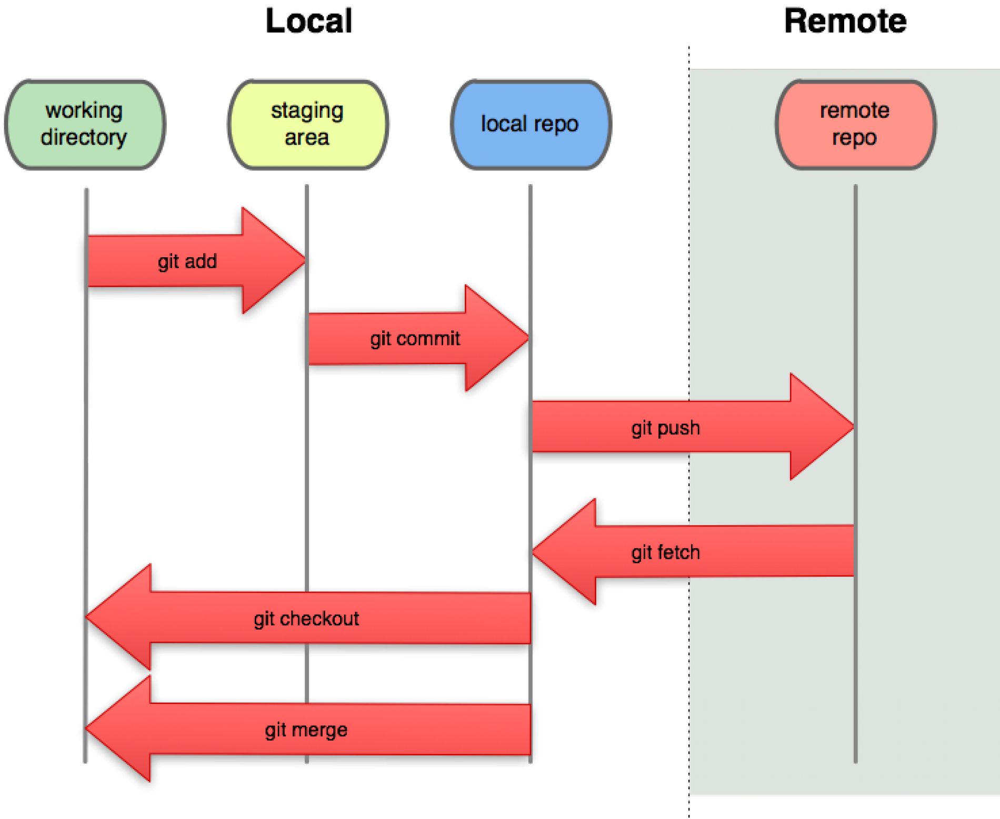

Semillero de R - FacCA
1. Caja de herramientas del analista de datos
- Lenguaje R
- IDE RStudio
- Git
- Github
- Markdown (Rmarkdown)
Lenguaje R
Características de R
- Útil para administración, gestión e integración de datos.
- Capacidad de graficación robusta.
- Comunidad dinámica de R.
- Sistema basado en bibliotecas.
- Software libre
- Descargar R.
GUI de R

RStudio
Caracterísitcas de RStudio
- Entorno de desarrollo integrado (IDE).
- Interactividad.
- Facilita la investigación reproducible.
- Permite la implementación de otros lenguajes de programación.
- Permite control de versiones (Git).
- Descargar RStudio.
IDE RStudio

Git
Diseñador de Git
¿Qué es control de versiones?
“El control de versiones es un sistema que registra cambios en un archivo o conjunto de archivos a lo largo del tiempo para que pueda recuperar versiones específicas más tarde.”
Fuente.
¿Qué es Git?
“Git es un sistema de control de versiones distribuidas de código abierto y gratuito diseñado para manejar todo, desde proyectos pequeños a muy grandes, con velocidad y eficiencia.”
Fuente
Control de versiones

Bondades
Mejoras compartidas. - Administración de proyectos remotos (web).
- Control de código abierto.
- Disponible para todos.
Descargar e instalar Git
- Descargar Git
- Windows:
- Instalar Git Bash para Windows.
- Ejecutar Git Bash.
Github
¿Qué es Github?
“GitHub es una plataforma de desarrollo inspirada en la forma en que trabajas. Desde el código abierto hasta el del negocio, puede alojar y revisar el código, administrar proyectos y crear software junto con 28 millones de desarrolladores.”
Fuente.
Registrarse en Github

Configuración de Git
- Configurar nombre de usuario y contraseña:
git config --global user.name "Your Name Here"
git config --global user.email "your_email@example.com"- Verificar nombre de usuario y contraseña:
git config --listMarkdown
¿Qué es Markdown?
“Markdown es un lenguaje de marcado ligero creado por John Gruber que trata de conseguir la máxima legibilidad y facilidad de publicación tanto en su forma de entrada como de salida, inspirándose en muchas convenciones existentes para marcar mensajes de correo electrónico usando texto plano.”
Elementos básicos de Markdown
Títulos o encabezados
# Título 1
## Título 2
### Título 3Viñetas
- Viñeta 1
- Viñeta 2
- Subviñeta 2.1
- Viñeta 3
* Viñeta 1
* Viñeta 2
* Subviñeta 2.1
* Viñeta 3
+ Viñeta 1
+ Viñeta 2
+ Subviñeta 2.1
+ Viñeta 3 Insertar imagen
 Insertar hipervínculo
- Primera forma:
https://es.wikipedia.org/wiki/Git - Segunda forma:
[Git Wikipedia](https://es.wikipedia.org/wiki/Git) Opciones de texto
- Cursiva:
*Texto*
_Texto_- Negrilla:
**Texto**
__Texto__- Negrilla cursiva:
***Texto***
___Texto___Actividad
Actividad 1
- Crear cuenta en Github.
- Descargar e instalar Git.
- Instalar R.
- Instalar RStudio.
- Crear un repositorio en Github.
- Clonar el repsitorio a través de RStudio.
Crear documento Rmarkdown.